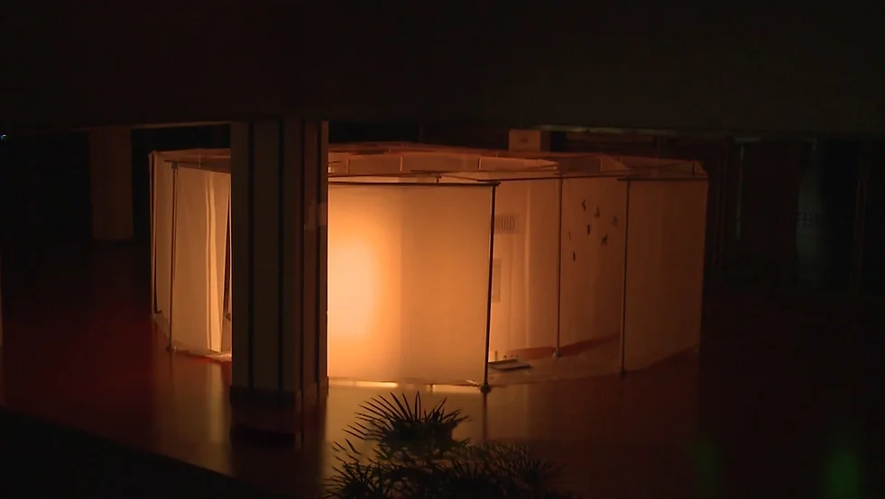
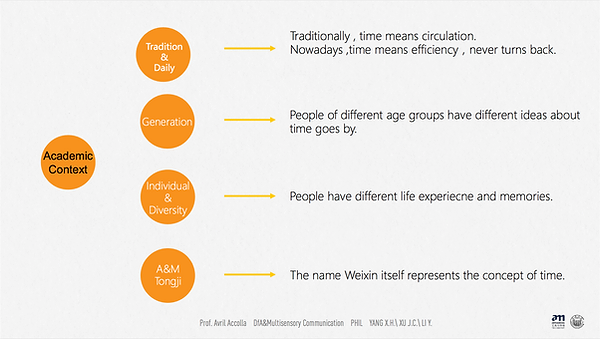
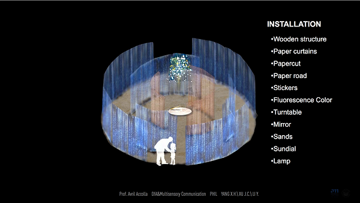
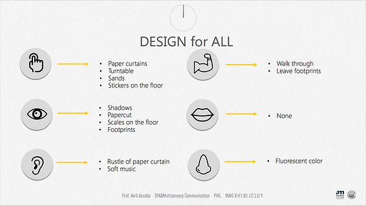
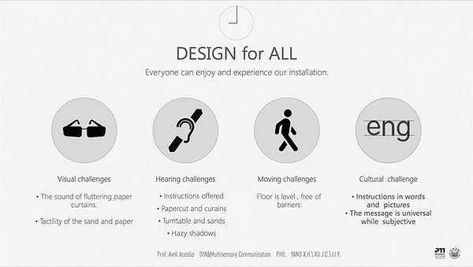
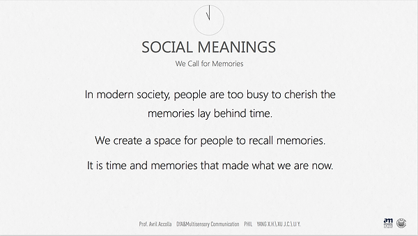
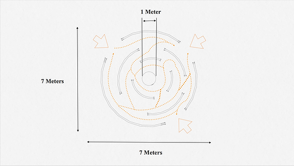
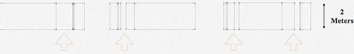
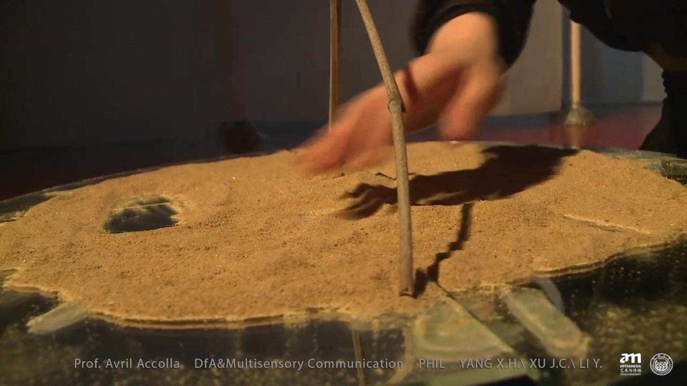
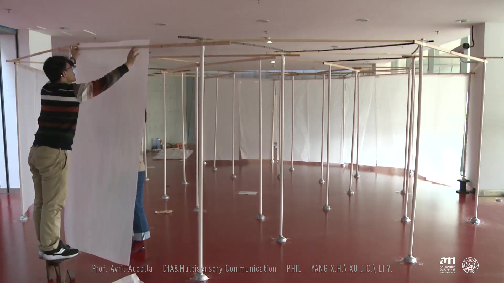

面向所有人的设计Design for All
项目说明按旧站英文原文保留；时间与个人介绍反映当时的作品集记录。Original portfolio text is preserved in English. Dates and biographical information reflect the archived portfolio; see the academic homepage for current information.

Design for All
Time Stays while Passed
DfA & Multisensory Communication
12.2016
Time is not just a number on watch, or a physical quantity of eating, sleeping, working, it carries memories, cognition, imagination and feelings, which make what we are now. In this project, we design an installation which is a design for all, people can feel the installation by all their senses and also people who has visual, hearing, moving and reading obstacles can feel this design.





Team: Fang You, Yang Li, Cuiqiong Cheng, Yujia Wang, Haoran Zhou




Time Stays while Passed

The birth of the installation
Team: Xiaohe Yang, Jiacheng Xu, Yang Li
在原站观看两段作品视频 / Watch the two project videos on the original site ↗